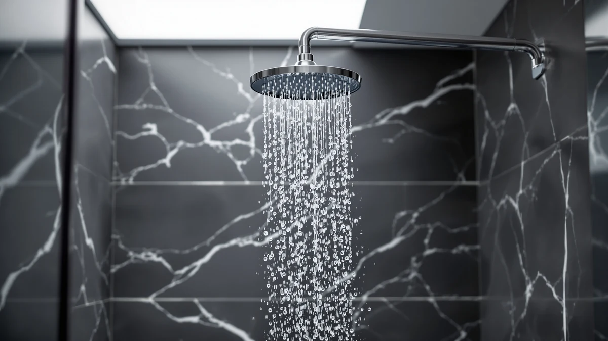

Low Flow Shower Heads vs Standard: Which Is Better? (2026)
Prices and picks verified as of September 2026. Independent, reader-supported reviews.


Things to Know Before You Buy
- Low flow shower heads are capped at 2.0 gallons per minute (GPM) or less by federal law, while standard shower heads run at 2.5 GPM, the maximum allowed since 1992.
- WaterSense-certified low flow models use air injection or narrower nozzles to preserve spray pressure despite the lower flow rate.
- A four-person household can save 20 to 30 dollars a year on combined water and water-heating costs by switching to a 1.5 GPM low flow head.
- Both types thread onto the same standard half-inch shower arm, so you do not need a plumber or special tools to switch.
- Hard water and mineral buildup affect both categories equally; nozzle design and cleaning frequency matter more than flow rate.
Low flow shower heads vs standard is the decision most people face the moment their old shower head clogs or their water bill creeps up, and the choice comes down to what you value more: a lower monthly cost or the biggest possible stream of water.
We researched the flow-rate regulations, pressure engineering, and verified owner reviews behind both categories to lay out the real tradeoffs. Neither option is universally better. A low flow head saves water and money over time, and a standard head delivers more raw volume for anyone who showers in a home with strong incoming water pressure. This guide compares build quality, price, and day-to-day feel so you can match the category to your bathroom instead of guessing.
Quick Answer
A low flow shower head is the better pick for most households: it cuts water and heating costs while still delivering strong pressure through air-injection nozzles like the ones on the Shower Head 10 Functions High and the BESAQUO Shower Head 10 Functions. A standard shower head makes more sense for homes with already-low incoming water pressure, since every gallon that reaches the nozzle counts toward the spray you feel.
What is Low Flow Shower Heads?
A low flow shower head is any model that delivers 2.0 gallons per minute (GPM) or less, a threshold set by federal plumbing code and tightened further by voluntary WaterSense certification, which caps flow at 2.0 GPM or lower with a minimum pressure requirement built in. Manufacturers hit that target through a few engineering tricks: air-injection chambers that mix bubbles into the stream to make it feel fuller, laser-cut nozzle plates that narrow individual jets, and flow restrictors fitted directly behind the face plate.
Early low flow shower heads from the 1990s earned a bad reputation because the technology hadn't caught up with the regulation, and a lot of those first-generation models did dribble. Reviewers who compare current low flow shower heads vs standard models consistently note that the gap has closed. Owners of the BESAQUO Shower Head 10 Functions, for example, report pressure that feels close to a standard head despite the lower flow rate, largely because of its multi-setting nozzle design.
Low flow heads also tend to include multiple spray settings as standard, since manufacturers use setting variety to offset any perceived pressure loss. That makes them a common upgrade pick even for buyers who are not specifically chasing a lower water bill.
What is Standard?
A standard shower head runs at the federal maximum of 2.5 GPM, the ceiling set by the Energy Policy Act of 1992 and still in effect for any shower head sold without a low flow or WaterSense label. Products like the Shower Head 10 Functions High and the Ashwanth 8-inch rain shower head fall into this category: no flow restrictor, no air-injection chamber, only a wider bore that lets more water through per minute.
Standard shower heads dominate the rain and waterfall segment because a wide, flat spray face needs a higher flow rate to avoid feeling thin. A wide-format rain head running at low flow speeds would spread the same gallons over a bigger area and feel noticeably weaker, so most rain shower heads, including the Voolan Rain Shower Head and the Ashwanth model in our picks, stick to standard flow rates by design.
The tradeoff is straightforward. A standard shower head uses up to 25 percent more water per minute than a low flow model, which adds up across a household that showers daily. For homes with strong municipal water pressure, that extra volume translates directly into a fuller, harder-hitting spray without any engineering workaround needed.
Head-to-Head: Build Quality & Durability
Build quality in the low flow shower heads vs standard debate has more to do with materials than flow rate. Both categories span the same range of construction, from ABS plastic with a chrome finish to solid metal bodies like the one on the HammerHead Showers Solid Metal head. Flow restrictors and air-injection nozzles, the parts unique to low flow models, are typically molded plastic inserts that sit behind the face plate, and reviewers rarely flag them as a failure point compared with the rest of the unit.
Low flow heads face an extra durability question around mineral buildup. Their narrower nozzle openings clog faster than the wider openings on standard heads when a home has hard water, since less surface area is available before a jet closes off entirely. Owners in hard water regions who choose a low flow model, such as the PWERAN Filtered Shower Head, often pair it with a built-in filter cartridge to slow that buildup, which is why several low flow options on the market now ship with filtration included.
Standard shower heads, with their larger nozzle openings, tend to go longer between deep cleanings before pressure drops noticeably. That said, neither category holds a durability edge in normal water conditions. Metal construction, like the HammerHead Showers model, outlasts plastic-bodied heads regardless of flow rate, so buyers focused on long-term durability should weigh material choice above the low flow versus standard distinction.
Head-to-Head: Price & Value
Upfront prices for low flow shower heads vs standard models land in roughly the same range, from around 20 dollars for a basic single-setting head like the Aqua Elegante High Pressure Shower to the mid-30s for a multi-function model such as the BESAQUO Shower Head 10 Functions. Flow rate alone rarely drives the price tag; features like the number of spray settings, filtration, and finish quality matter more.
The value gap shows up after purchase, not at checkout. A low flow head at 1.5 to 2.0 GPM lowers both the water bill and the water-heating bill, since less hot water is drawn per shower, and EPA WaterSense estimates put combined annual savings around 20 to 30 dollars for a typical family. A standard head costs nothing extra to buy but keeps drawing the higher 2.5 GPM rate for as long as it stays installed, so the two categories tend to reach price parity within a year or two of ownership.
Head-to-Head: Use Experience
Day-to-day, the low flow shower heads vs standard difference is most noticeable in shower length and rinse speed. Verified owner reviews of low flow models like the Shower Head 10 Functions High describe a stream that feels concentrated rather than thin, thanks to air-injection nozzles, but they also note it can take a beat longer to rinse thick or long hair since less total water passes through per minute. Reviewers consistently mention that switching a massage or pulse setting compensates for most of that gap.
Standard shower heads win on raw sensation. A wide rain-style head running at 2.5 GPM, such as the Voolan Rain Shower Head, covers more of your body at once and rinses soap and shampoo faster simply because there is more water moving through the face plate every second. That makes standard flow the better match for anyone who already finds their bathroom's water pressure marginal, since a low flow restrictor would compound an existing weak-pressure problem.
Temperature response is another factor owners bring up. Low flow heads reach a stable hot-water temperature slightly faster because less cold water sits in the line before hot water arrives, a small but real convenience during winter mornings. Standard heads have no advantage here and simply move more water at whatever temperature the valve is set to.
When to Choose Low Flow Shower Heads
Choose a low flow shower head if you pay your own water and heating bills, live in a household with more than two people showering daily, or live somewhere with drought restrictions or tiered water pricing. The cost savings compound with every additional person in the home, and many municipalities now offer rebates for WaterSense-certified fixtures that make the switch effectively free.
Low flow is also the right call if your home already has strong incoming water pressure, since a low flow head's air-injection design needs a baseline of pressure to work well. In that scenario you get the savings without giving up much in the way of spray strength. Renters who want to shrink their utility footprint without a major bathroom renovation are a good fit too, since a low flow head swaps in with no tools beyond a wrench and some plumber's tape.
When to Choose Standard
Choose a standard shower head if your home already struggles with low water pressure, since adding a flow restrictor on top of a weak supply line only makes the problem worse. Older homes with narrow galvanized pipes, upper floors of multi-story buildings, and houses on well systems with modest pump output all tend to do better with the full 2.5 GPM flow rate.
Standard flow also makes more sense for anyone set on a wide rain or waterfall shower head, since those designs need the extra volume to cover their larger face plates evenly. If water and heating costs are not a significant factor in your budget, or if you live alone and shower briefly, the savings from low flow shower heads vs standard models may not be large enough to outweigh the stronger, more direct spray a standard head delivers.
Our Top Picks
These three picks represent the range you will find across both categories, from a high-setting standard-flow head to a value-priced multi-function option and a premium rain-style head.

Editor’s Pick
Shower Head 10 Functions High
Ten spray settings at standard flow for owners who want maximum spray volume and pattern variety.
$28.96
Check Price on Amazon
Best Value
BESAQUO Shower Head 10 Functions
A multi-setting head priced to compete with basic standard models while offering a water-saving mode.
$34.99
Check Price on Amazon
Premium Choice
Voolan Rain Shower Head -
A wide rain-style head for owners who want full standard-flow coverage over a low flow restrictor.
$33.99
Check Price on AmazonFrequently Asked Questions
Do low flow shower heads actually have less pressure than standard ones?
Not necessarily. Modern low flow shower heads use air-injection and narrower nozzle patterns to keep pressure feeling strong while cutting the gallons per minute that pass through. Owners of older low flow models from the 1990s often remember weak pressure, but current WaterSense-certified heads at 1.5 to 1.8 GPM can feel comparable to a 2.5 GPM standard head.
How much money does a low flow shower head save per year?
A household of four switching from a 2.5 GPM standard shower head to a 1.5 GPM low flow model typically saves several thousand gallons of water a year, which translates to roughly 20 to 30 dollars in combined water and water-heating costs annually, according to EPA WaterSense estimates. Savings scale with shower frequency and local utility rates.
Can I install a low flow shower head myself?
Yes. Both low flow shower heads vs standard models thread onto the same standard half-inch NPT shower arm, so installation is identical: remove the old head, wrap the threads with plumber's tape, and hand-tighten the new one with a quarter turn from a wrench if needed. No plumber is required for either type.
Will a low flow shower head clog faster in hard water areas?
It can. Low flow nozzles are narrower than standard nozzles, so mineral deposits have less room to build up before a jet closes off. Owners in hard water regions often pair a low flow head with a filter cartridge, like the one built into the PWERAN Filtered Shower Head, to slow that buildup and keep the spray pattern even.
Is it legal to buy a shower head above 2.5 GPM in the US?
No. Federal law has capped shower head flow at 2.5 GPM since 1992, so any head sold as new in the US, whether labeled low flow or standard, tops out at that rate. A handful of states, including California and Colorado, set an even lower ceiling for shower heads sold within their borders.
Final Verdict
Low flow shower heads vs standard comes down to your water pressure and your priorities: a low flow model like the BESAQUO Shower Head 10 Functions is the better pick if you want lower bills without a meaningful drop in spray feel, while a standard head serves homes with weak incoming pressure or a preference for maximum water volume better. Neither is a wrong choice, but most households save money long-term by going low flow.